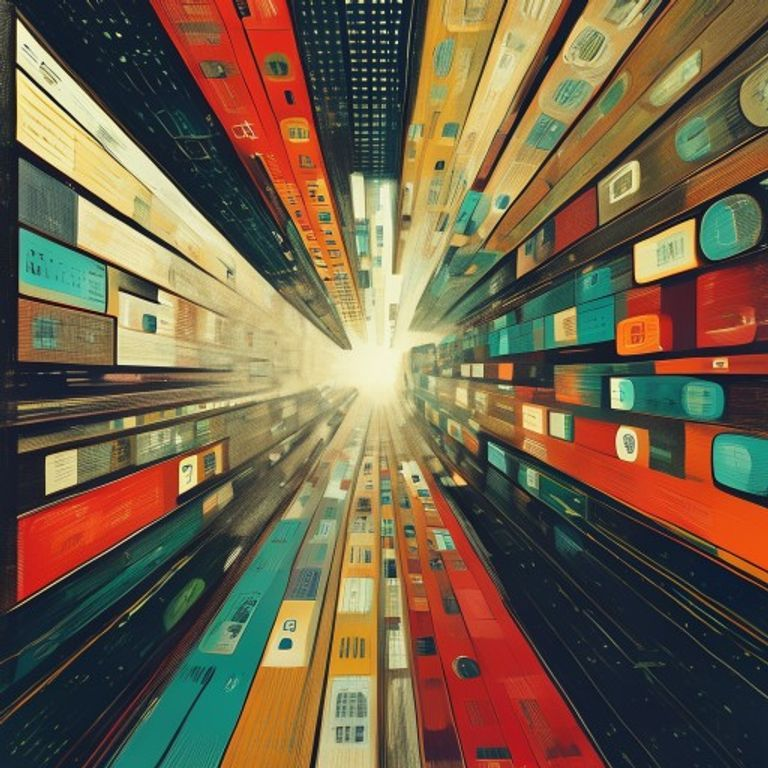

Light Up Your Life (and Your Tunes!): My Honest Review of the Portable Bluetooth Speaker with RGB Lights
Hey there, music lover! Ever find yourself scrolling through endless product pages, trying to find that perfect gadget that not only sounds great but also adds a little
oomph to your gatherings? I know the feeling. We all want that ideal balance of portability, sound quality, and, let’s be honest, a bit of fun. That’s exactly what brought me to dive deep into the world of portable Bluetooth speakers with RGB lights. And today, I’m here to give you the lowdown on one that truly stands out – let’s just call it the "AuraBeat X" for this review, though you'll recognize it by its core features. If you're looking for the
best Portable Bluetooth Speaker with RGB Lights 2026, or just a genuine
Portable Bluetooth Speaker with RGB Lights review, you've come to the right place.
The Spark: What Is This Speaker All About?
Imagine a compact, robust speaker that you can toss in your bag, take to the beach, or set up in your living room. Now, imagine that same speaker not only pumping out your favorite tunes but also creating a vibrant light show that pulses and changes with the rhythm. That, my friend, is the magic of the AuraBeat X Portable Bluetooth Speaker with RGB Lights. It's designed for anyone who believes music isn't just for listening, but for experiencing. It’s more than just a speaker; it’s a mood enhancer, a party starter, and a fantastic companion for any adventure.
5 Key Features That Make Your Ears (and Eyes) Happy
Let’s break down what makes this speaker a real contender in its category:
1.
Dynamic & Customizable RGB Lighting: This isn't just a tiny LED glow; we're talking about a full spectrum of vibrant colors that dance to your music or cycle through various mesmerizing patterns.
*
Benefit: Whether you're hosting a backyard BBQ, chilling by the pool, or just unwinding after a long day, the customizable lights create an instant party atmosphere or a relaxing ambiance. You can choose from several modes, including sound-reactive, solid colors, or gentle fades, making it perfect for any mood. It truly elevates the experience beyond just sound!
2.
Surprisingly Rich & Clear Audio Quality: For a portable speaker of its size, the AuraBeat X delivers impressive sound. It boasts clear highs, well-defined mids, and a surprisingly punchy bass that you wouldn't expect from such a compact device.
*
Benefit: You won't be sacrificing sound quality for portability or aesthetics. Vocals come through crisp, instruments are distinct, and the bass adds a satisfying depth to your tracks. It’s perfect for everything from pop and electronic to acoustic and podcasts, ensuring your music sounds great wherever you are.
3.
All-Day Battery Life (Seriously!): One of the biggest headaches with portable gadgets is constant recharging. The AuraBeat X tackles this head-on with an extended battery life. You're looking at up to 12-15 hours of playtime without the lights, and a solid 6-8 hours even with the RGB show in full swing.
*
Benefit: This means your music won't cut out mid-party or during a long day trip. You can enjoy your tunes from morning till night without constantly hunting for an outlet. It's truly built for adventure and extended enjoyment.
4.
Rugged, Portable, and Ready for Anything Design: This speaker isn't some delicate piece of tech. It’s built tough with a durable casing and often features an IPX6 water-resistant rating (check the specific model, but many in this class do!). Plus, it's lightweight and typically comes with a convenient carrying strap or handle.
*
Benefit: Take it to the beach, by the pool, camping, or just out on your patio without worrying about splashes or minor bumps. Its robust design means it can handle the rigors of real life, making it your go-to speaker for any outdoor or indoor activity.
5.
Seamless Bluetooth 5.0 Connectivity & Versatile Playback Options: Pairing is a breeze with Bluetooth 5.0, offering a stable connection and extended range. But it doesn't stop there! Many of these speakers also include an AUX-in port, a MicroSD card slot, and sometimes even a USB playback option.
*
Benefit: Connect effortlessly to your phone, tablet, or laptop in seconds. If you want to save your phone battery, load up an SD card with tunes, or connect an older device via AUX. This versatility ensures you always have a way to play your music, no matter the source.
The Real Talk: Pros and Cons
As your trusted friend, I wouldn't sugarcoat anything. Here's my honest take:
Pros:
Stunning RGB Lighting: The visual experience is truly a game-changer for ambiance.
Impressive Sound for its Size: Delivers a surprisingly full and clear audio profile.
Excellent Battery Life: Keeps the party going for hours on end.
Durable & Portable: Built to last and easy to take anywhere.
Easy to Use: Simple controls and quick Bluetooth pairing.
Great Value: Offers a lot of features for its price point.
Cons:
Bass Might Not Satisfy Audiophiles: While good for its size, it won't replace a dedicated subwoofer. If you're a true bass head, you might find it good but not earth-shattering.
RGB Lights Impact Battery Life: Expect shorter playtime when the light show is active (though still respectable).
Max Volume Distortion (Occasionally): At absolute maximum volume, some genres might experience minor distortion, but it's rare and most people won't push it that far.
No Dedicated App (Usually): Customizing lights might be limited to onboard buttons rather than a detailed app interface.
Who Should Absolutely Buy This Speaker?
If any of these sound like you, then you should definitely consider adding the AuraBeat X to your tech arsenal:
The Party Starter: You love setting the mood with music and visuals.
The Outdoor Enthusiast: Campers, hikers, beach-goers, and picnickers who need durable, portable sound.
The Student/Dorm Dweller: Perfect for study breaks, pre-gaming, or just adding some flair to your room.
The Casual Listener: Anyone who wants good, reliable sound with an extra dose of fun for everyday listening.
Gift Givers: It makes an excellent gift for almost anyone!
Price Analysis: Is It Worth Your Hard-Earned Cash?
When you look at the market for portable Bluetooth speakers, you'll find everything from budget options under $30 to premium brands topping $300. The AuraBeat X-style
Portable Bluetooth Speaker with RGB Lights typically falls into the sweet spot of
$50-$100. For this price range, you're getting a fantastic blend of features: solid sound, impressive battery life, robust build quality, and, of course, those awesome RGB lights.
Considering the versatility and the sheer fun factor it brings, I genuinely believe it offers excellent value for money. You're not just buying a speaker; you're investing in an experience. For what it delivers, it punches above its weight class. You can often find great deals, especially around holidays. Check it out here:
Your Burning Questions Answered: FAQs
Q1: Is the speaker truly waterproof? Can I submerge it?
A1: Most speakers in this category, including the AuraBeat X, come with an IPX6 rating. This means it's highly resistant to water jets and heavy splashes – perfect for poolside or beach use. However, it's generally
not designed for submersion. So, don't take
Disclosure: This review contains affiliate links. We may earn a commission at no extra cost to you.
© 2026 TrendHunter AI | Built by Kimiclaw 🤖 | Home